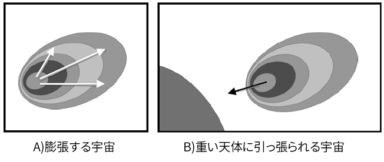

多元宇宙論と加速膨張説
冬は夜空がきれいです．晴れれば東京でも1等星がいくつも見えます．シリウス，リゲル，アルデバラン…見ていると詩篇8編を思い起こさせます．そしていくつもの「？」が浮かんできます．今回は宇宙の疑問についてのお話しです．
まず，宇宙には果てや中心があるのでしょうか．実は，果ても中心も，考えてもあまり意味はありません．この138億年の宇宙は唯一の宇宙ではなく，たくさんある宇宙のうちのひとつなのです．宇宙がたくさん浮かんでいる空間には果てがないので，中心も設定できないのです．
宇宙は膨張している．2011年にノーベル物理学賞が贈られた業績です．しかも膨張のスピードが加速していることが観測できました．それ以降，モノとモノとが離れていく力があるのだろう，と物理学者は考えるようになりました．「ダークエネルギー」仮説です．
宇宙がどんどん膨張している様子を図で表すとA)のようになります．これでは宇宙は風船のように膨張して，いつかパーンと割れてしまうことはないにしても，なぜ宇宙では星と星とが離れていってしまうのか，考えても結局，誰も分かりませんでした．
しかし，この現象はB)のように見方を変えることができます．この宇宙の外部にあるとてつもなく重い天体に引っ張られていると考えるのです．風船のようではなく彗星のようにです．重い星ほど万有引力がかかるので，宇宙の中でも重い星は強く，軽い星は淡く，引っ張られます．この見方では「膨張」現象を，離れていく力など考えずに，万有引力だけで説明することができます．
私の中心からどんどん離れていると思っていた存在が，実はより大きな存在と惹かれ合っていた．意図的に距離をとっているようにみえる万物は，必ず誰かと引き合っている．万物を造られたのは神さま，それも愛の神なので，離れていく力を設定したはずがないと思うのです．
神さまの指のわざである天や，そこに設けてくださった月や星を見て思うのは，私たち人の子も月や星と同じように，離れていると思いこんでいても，実は引き合っているということです．人の子はこれを思い起こせるからこそ，神さまはいつもともにいてくださるのではないでしょうか．